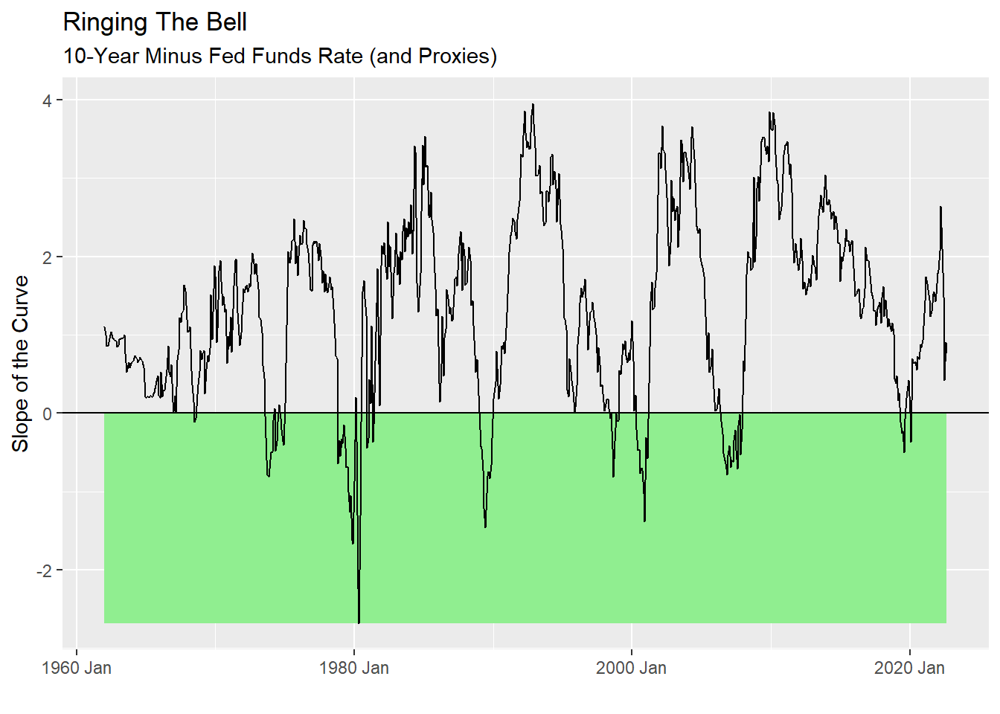
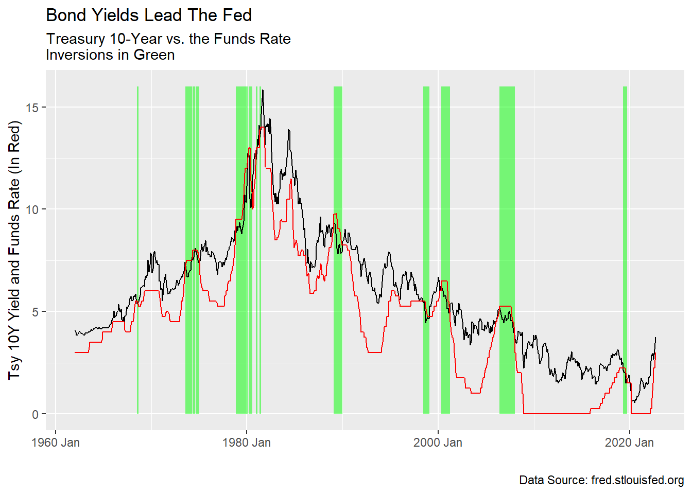

Thoughts on Rates: a Chart Pack, Fall 2022
Part Two: Much More Pain
What Will Happen.
One thing that makes pundits boring is their endless explanations of the past (Oops, guilty) with scant conviction on what the future holds. So let’s get to that. “They” will tell you that the yield curve is inverted because 10s are lower than 2s. “They” are wrong. I stick to my prediction of the Spring. Bond markets will continue to suffer until the Funds rate climbs above the 10-year yield. See my post from March 2022 for the rationale. It has aged pretty well.
… and …
My dodge is I don’t predict what that level will be. I have seriously heard people say things like “Well, after the next hike we’ll be there.” They forget that the bond market can move too, and it will. As James Makintosh writes in the Wall Street Journal, just as the Fed is behind the curve, so are investors. Hindsight bias means people are still unappreciative of how high rates can go, unless you are old, like me.
One of the contradictions of market forecasters and curve shape is that when the curve inverts it predicts a recession and a recession is bad for the markets. My friends at Deutsche Bank produce a very nice probit model based on the yield curve that shows the probability of recession. As a trader, I don’t care. The problem is macroeconomic data is a lagging indicator of what markets do and so is useless for market forecasting. The forecasters’ logic is circular.
NOT TRUE:
Markets –predict-> Economy –predict-> Markets
What To Do.
The nice thing about Fed Funds vs. long rates is it signals a bond market bottom. We don’t have to agonize over whether, several years from now, the NBER will label the current moment a recession.
So I have a clear view that when the “true” inversion happens the bond market will have bottomed and it’s time to get in. The same is not true for stocks, as I said in my last note. So, avoid stocks. Cash is king but the next trade is to buy bonds. In the chart below, the green zone shows the “true” inversion periods and thus the “buy zone.” How reasonable is that proposition?

Above we see the inversion periods. What happens to bond yields when we enter those zones? The economy truly slows down, inflation abates and Treasury bond prices start to rise again. That is evident from the chart below.

The “buy” signal is not as clear-cut as we would like. The timing could be tricky and we see at least one false signal in the late 90s. I have some optimism that we will get a good signal this time. Why? Inflation is stubborn and the level of the Funds Rate we will have to reach to bring it down is going to be “pretty high.” The consequence of being so far behind means the Fed will have to overshoot to show it means business. This suggests the slowdown will be pronounced. Bond yields will start their rally from levels we haven’t seen since the naughts. Remember when a 5% bond yield seemed normal? It will again, soon.
What would have happened had the Fed started raising rates a year ago? Could we have seen only a modest rise in long rates, like we did in the last two tightening cycles? We’ll never know. Few people remember Ben Bernanke’s comments in the wake of the financial crisis where he said that rate levels that were formerly considered neutral “are contractionary today.” Or Janet Yellen’s comments that previously “too high” levels of inflation might have to be tolerated for brief periods while the financial system remains fragile. The Fed is reaping the fruits of their own anchoring on the financial crisis of 2008-2009.
Are we doomed to see a reversal of the 40-year rally in bonds? Now the Fed has gotten the message, it seems. In the CPI run up after the first oil shock in 1973, the Fed’s response was insufficiently vigorous. They are on the case now and that’s why I think the Funds Rate is going higher than you think.
So we have a time, give or take, to buy bonds. Unfortunately for stocks, when this curve shape occurs (and not before) it shows investors finally are resigned to a real recession beginning. This is when it gets tough for company earnings. The bottom for equities will come later.
In my next note we’ll try to come up with a trading rule around when to buy bonds and how long to hold them. In the meantime, remember, cash is king.